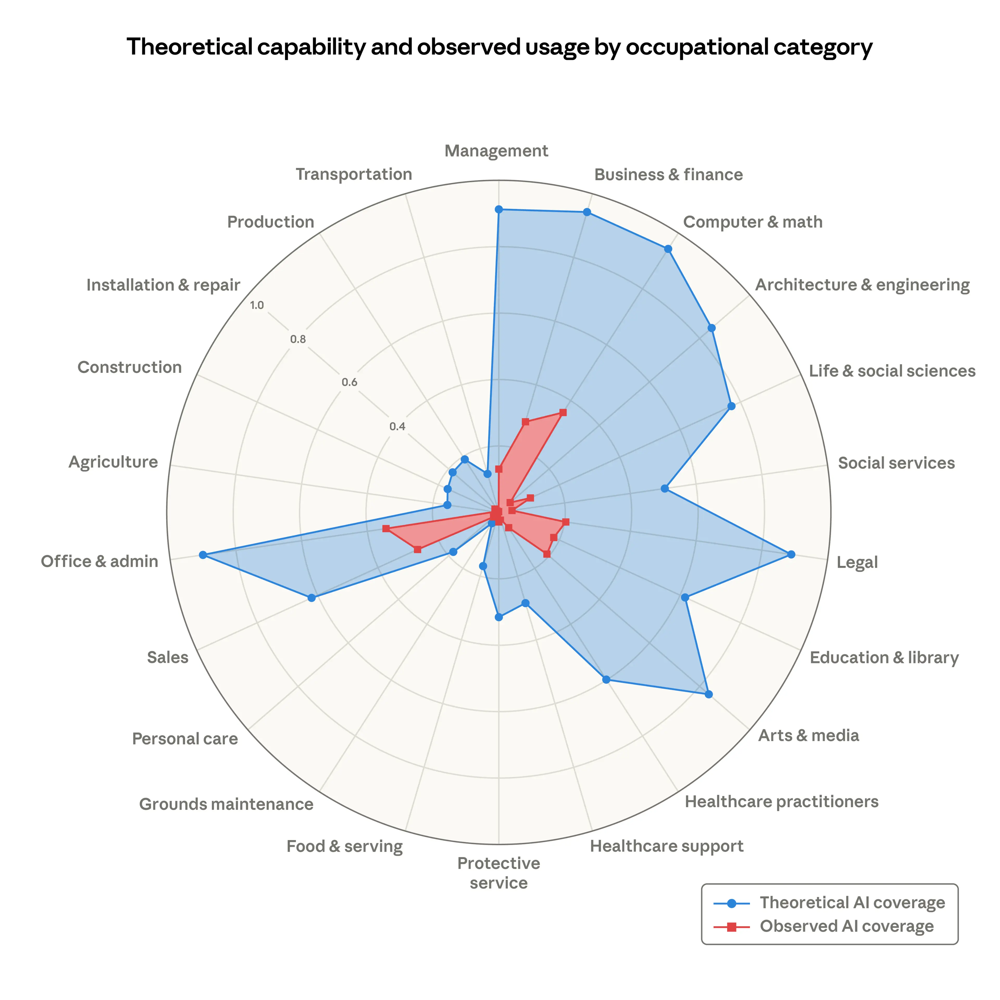

Field and company analysis
Select a profession to estimate risk
Ready
Composite risk
0
Waiting for analysis
Interpretation
No model run yet
Choose a role and company, then run the analysis to combine labor demand, automation exposure, layoffs, and emerging news into a directional risk estimate.
Profession outlook
Employment direction
Company posture
Confidence 0%
Company evidence
0
Select a company signal to view layoff and strategy indicators.
Evidence stream
What changed the score
Agent run
Collection pipeline
Local AI exposure reference
Anthropic occupational coverage graph

Creator profiles